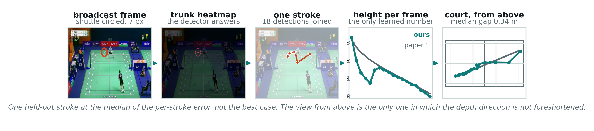
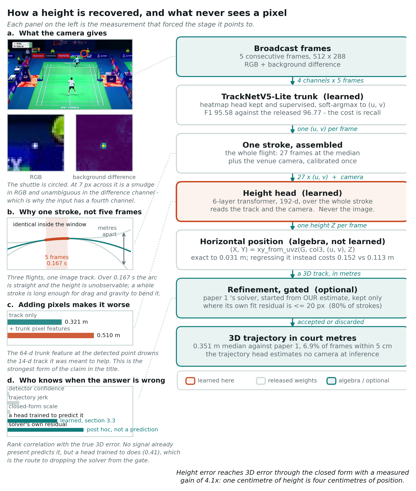
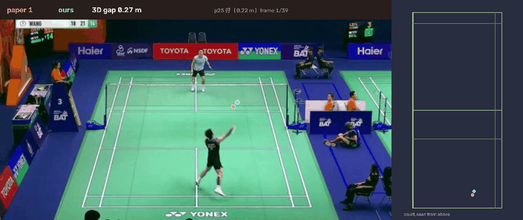
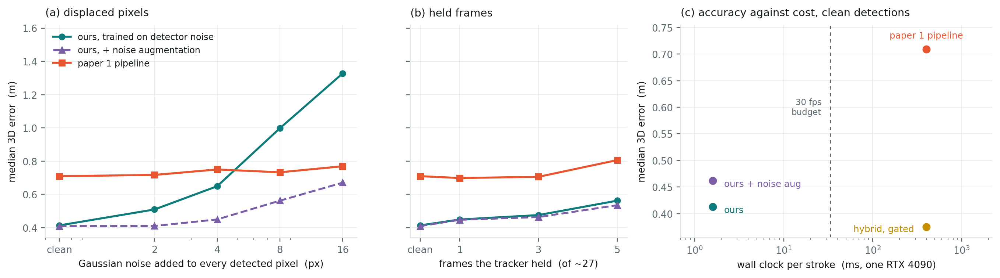

Companion to SimTrack3D (paper 1). This paper is a separate contribution and shares only that paper's labels.
Abstract. We reconstruct metric 3D shuttlecock trajectories from monocular broadcast video. The deployed model takes pixels and a court calibration and emits court-frame coordinates in metres; no camera parameters are estimated at inference by the trajectory head. Our central finding is negative about capacity and positive about time: a 192-dimensional model that never sees a pixel — given only the whole stroke's 2D track and the venue's camera — reaches a median 3D error of 0.319 m against paper 1's coordinates, while the end-to-end pixel model reading five frames reaches 1.030 m. Five frames is 0.167 s, over which a shuttle's arc is nearly straight and its height is not observable; one stroke is 27 frames at the median. Extending context past one stroke does not help and slightly hurts, because the extra frames belong to a different arc across a racket impact. We also report what did not work, with numbers, because several of those attempts are the obvious ones: three formulations of physics, a scene depth map from a monocular foundation model, trunk pixel features, higher capacity, a stronger detector, and running paper 1's own constrained solver on our detections. A hybrid does work — our estimate as that solver's starting point, accepted only where the solver's own fit residual is small — and improves the median by 16% and the fraction of frames within 5 cm from 3.6% to 6.9%. Because the only 3D reference this data has is that solver's own output, we separately report what can be shown without one, and say which of those checks are circular: reprojection error is an identity for our method and the physics residual is an identity for the solver, so neither discriminates alone. Under injected pixel noise the optimiser turns out to be the relatively more stable of the two — the opposite of the usual amortisation story, and a consequence of its output being a six-parameter flight. Retraining the same network with the observation-noise model as an explicit knob, which a per-instance optimiser has no equivalent of, costs 12% on clean detections and keeps it ahead at every corruption level tested.

A shuttlecock's 3D position is the quantity badminton analytics wants and monocular video does not directly give. The standard route is two stages: track the ball in 2D, then lift that track to 3D with a calibrated camera and a flight model. Paper 1 (SimTrack3D) builds such a pipeline and produces the 3D coordinates this paper is measured against.
This paper asks whether the lift can be learned — amortised into a network that consumes the same inputs and produces the answer in one pass, without running an optimiser per stroke. That question has an obvious appeal (speed, differentiability, no per-stroke failure modes) and a non-obvious answer, which is that the amortised model is not merely competitive with the optimiser it imitates but more accurate than it — 0.413 m against 0.709 m on the same held-out strokes and the same detections — at 1/249 of the cost. The reason is not that the network is a better estimator in the abstract. It is that the optimiser's objective treats the detected pixels as the truth and has no way to represent the detector's error distribution, while a model fitted over a corpus in which those errors are present absorbs them. Section 4 tests that explanation directly, and reports the part of it that does not survive: expressed as a ratio against its own clean performance, the optimiser is the more stable of the two under added pixel noise, because a six-parameter flight is a heavily smoothed function of its observations. It is simply worse throughout.
MonoTrack reconstructs 3D badminton trajectories from monocular video with a nonlinear optimiser over a detected court, track and player poses, and is the natural point of comparison. Its headline 3D accuracy is measured on synthetic trajectories: 10,000 simulated shots with sampled initial conditions, where the error averages 14.9 cm and improves to 8.0 cm with priors, saturating near 5 cm for the longest flights. On its real data — 77k annotated frames over 26 matches — it reports reprojection error only, at up to 37.1 px, because real 3D ground truth was not available.
That distinction sets the bar this paper is held to. A 5 cm figure obtained on synthetic flights and a median error measured against an independent reconstruction of real broadcast video are not the same measurement, and our numbers should not be read against that one. What we can say is what the labels themselves support: on paper 1's coordinates a perfect model reaches 0.049 m RMSE at 95% coverage (§5.1), and we are at 0.878 m.

make_fig.py, exported as SVG and PDF alongside the PNG.The deployed system is a detector and a trajectory head. The detector is TrackNetV5-Lite, fine-tuned; the trajectory head reads the detected 2D track for a whole stroke together with the venue's calibration and emits one height per frame. The horizontal position is not predicted. Given the ground homography and the focal length, the court-plane position is determined by the image position and the height, and solving it in closed form rather than regressing it removes two of three degrees of freedom:
(X, Y) = xy_from_uvz(G, col3, (u, v), Z)This is exact to 0.031 m median on paper 1's labels — the residual of the parameterisation itself, measured by feeding it the true pixel, the true height and the true camera. Predicting X and Y freely instead spends capacity re-deriving something the image already fixes, and measurably so: the free-head variant's horizontal error is 0.152 m against 0.113 m for the geometric one.
Height is the one quantity a single view does not constrain. Over five frames — 0.167 s — a shuttle's arc is nearly a straight line, and a straight line in the image is consistent with a one-parameter family of 3D lines. Over a whole stroke, gravity and drag bend the arc, and the bend is what fixes the height. The median stroke in this data is 27 frames.
The head is a six-layer, 192-dimensional transformer over the stroke's frames. Its inputs are the detected pixel, its time derivative, the frame time, and a nine-number summary of the venue camera. It does not read the image. That is not an architectural preference but the experiment: adding the trunk's pixel features at the detected point makes it worse (§6.3).
A badminton court is symmetric under X → W − X. Reflecting the pixel about the image centre, permuting which physical corner carries which court coordinate, and negating the court X gives a track a real camera on the other side would have produced — not an approximation. It halves the overfitting gap (train/unseen 0.17/0.27 → 0.14/0.22) and takes the median from 0.277 m to 0.204 m.
Thirty-three venues, 222,509 labelled frames, 9,342 strokes. Twenty-seven come from paper 1's automatic calibration; six were calibrated by hand for this paper (four court corners and two net-post tops per venue, which is the minimum that determines a camera — the court alone is coplanar and leaves the focal free). Seven venues are held out, including all three of TrackNetV3's test matches: the released TrackNetV5 never saw those, so leaving them in training would score us on ground only one of the two models has read.
Every stroke-level number is measured with the model's own detections as input, not the label track. This matters more than it sounds: see §5.2.
Scored against paper 1's coordinates on its held-out venue (998 strokes, 26,725 frames). "≤5 cm" is the fraction of frames within 5 cm; RMSE 95 trims the worst 5%, because RMSE on this data is a tail statistic (§5.1).
| method | median (m) | RMSE 95 (m) | ≤5 cm |
|---|---|---|---|
| end-to-end, 5 frames, free xyz head | 0.985 | 1.511 | 0.1% |
| end-to-end, 5 frames, geometric head | 0.951 | 1.519 | 0.3% |
| stroke-level height head (this work) | 0.417 | 0.929 | 3.6% |
| + solver refinement, every stroke | 0.386 | 1.107 | 6.7% |
| + solver refinement, gated on its residual | 0.351 | 0.878 | 6.9% |
| perfect model (label self-consistency) | 0.031 | 0.049 | 71.9% |
Three things are worth reading off this table. The stroke-level head beats the five-frame end-to-end model by 2.4×, and the geometric parameterisation does not rescue the five-frame model (§6). Accepting every solver refinement improves the median while making the RMSE worse: the optimiser makes good estimates better and bad ones worse, which is what the gate is for. And the fraction of frames within 5 cm moves from 0.1% to 6.9% across the table, which is the figure a downstream analytics use actually cares about.
Paper 1's pipeline run on its own is not in the table, because the table is scored per frame on the clean subset while the pipeline has to be scored per stroke on whatever it returns. Measured that way it loses on both sets we can measure it on. On the TrackNetV3 venues, where we can regenerate its input, it gives 0.765 m against the learned model's 0.333 m on the same detections; on the held-out venue, 0.709 m against 0.413 m over 250 strokes (§4.2). The amortised model is 1.7–2.3× more accurate than the optimiser it was trained to imitate. Its feasible rate falls 92.3% → 86.3% and its own fit residual rises 10.8 → 78.2 px when fed a detector with a 26.9 px p90; a model trained on that same noise absorbs it. This is why §3.3 uses the solver as a refiner and never on its own.
Measuring this correctly took two attempts, and the failed one is worth naming because it is easy to repeat. The first version handed paper 1's solver our own height estimate as its starting point. That measures the hybrid of §3.3, not the baseline: it reads 0.375 m and flatters the optimiser by nearly a factor of two. Every number reported for "paper 1's pipeline" here runs its own lifter first, as it would be run in practice.

We could find no signal available at inference that predicts the model's own error. Detector confidence, the trajectory's third difference, and the closed-form scale all have |ρ| ≤ 0.10 against the 3D error, and selecting the smoothest 10% of frames gives 0.407 m — worse than the 0.319 m overall median. The model cannot tell when it is right.
The solver can. Its rms_px measures how well the refined track explains the pixels it
was fitted to — a post-hoc measurement, not a prediction — and gating on it recovers the
refinement's gain without its cost:
| gate | refinements accepted | median (m) | RMSE 95 (m) | ≤5 cm |
|---|---|---|---|---|
| none (model only) | 0% | 0.417 | 0.929 | 3.6% |
| rms ≤ 6 px | 47.2% | 0.394 | 0.912 | 5.6% |
| rms ≤ 10 px | 72.3% | 0.359 | 0.886 | 6.7% |
| rms ≤ 20 px | 80.0% | 0.351 | 0.878 | 6.9% |
| accept all | 100% | 0.386 | 1.107 | 6.7% |
Scored TrackNetV5's own way — binarise the heatmap at 0.5, take the largest-area contour, 4 px tolerance at 512×288, one row per frame — on 55,387 TrackNetV3 frames:
| model | F1 | precision | recall |
|---|---|---|---|
| TrackNetV5-Lite, released | 96.77 | 99.29 | 94.38 |
| same trunk, also emitting 3D | 95.58 | 99.18 | 92.23 |
The cost is 1.19 F1 points and it is entirely recall: precision is unchanged to within a tenth of a point. Adding the 3D output did not make detections sloppier; it made the detector more conservative, so more frames fail to cross the threshold. A soft-argmax evaluation cannot see this — it returns a coordinate for every frame and so can never record a miss — which is why we report the released protocol rather than a median pixel distance.
Every number in section 3 is scored against paper 1's coordinates, and paper 1's coordinates are an offline optimiser's output. Agreement with them cannot, on its own, establish that either method is right, and a reviewer is entitled to read the whole of section 3 as distillation with extra steps. This section is the answer: four measurements that need no 3D ground truth, and a warning that two of them are worthless if read carelessly.
The two checks a monocular paper reaches for first are reprojection error and physical consistency. On this pair of methods each one is an identity for one side and a genuine measurement for the other.
| on 250 held-out strokes | reprojection median px | reprojection p90 px | drag residual median m/s² | jerk median m/s³ | net clearance median m |
|---|---|---|---|---|---|
| ours | 0.00 † | 0.00 † | 109.0 | 194 | +0.31 |
| paper 1 pipeline | 3.85 | 21.32 | 0.0 † | 1 † | +0.34 |
| hybrid (ours → solver) | 3.74 | 21.04 | 0.0 | 1 | +0.35 |
† An identity, not a measurement. The marked cell is zero by the construction of the method in that row and carries no information about whether its 3D is correct.
Our horizontal position is solved in closed form from the detected pixel and the predicted height, so our 3D reprojects onto the detection exactly: 0.00 px at the median and 0.00 px at p90, and it would stay 0.00 px if the height head were replaced by a random number generator. Paper 1's trajectory is the integral of a drag ODE, so its residual against that same ODE is 0.0 by construction, and it would stay 0.0 if the launch state were wrong by ten metres. Neither column discriminates. Both belong in the paper only as a pair.
Read together they do say something, and it is not flattering to us. Zero reprojection error means all of our error is in the height, which section 3 already reports; 109 m/s² of drag residual at 30 fps is a frame-to-frame height ripple of a Δt² ≈ 12 cm, which is exactly the jitter visible in the blue track of Figure 3. Our output is a sequence of plausible positions, not a flyable trajectory. The one metric that is an identity for neither method — net clearance, which is a fact about the court rather than about either model's own objective — puts the two within 3 cm of each other.
State the problem the way it is. Both methods see the same thing: a sequence of detected pixels corrupted by detector error, and a camera. Paper 1 solves, per stroke, an optimisation whose objective treats those pixels as the truth; it has no access to the detector's error distribution and nothing in the objective tells it which pixels to distrust. The network instead learns a direct map from observations to state, fitted over a corpus in which the detector's errors are present with their real distribution. It is amortised inference for an inverse problem under observation noise, and the thing being amortised is not only the compute — it is the noise model.
The usual way to sell that argument is to show the optimiser collapsing under injected noise while the network holds. We ran the test and it does not say that. Both methods were handed the same corrupted detections, scored against the same clean reference.
| corruption applied to both | ours median m | + noise aug median m | paper 1 median m | ours × clean | paper 1 × clean |
|---|---|---|---|---|---|
| clean | 0.413 | 0.462 | 0.709 | 1.00 | 1.00 |
| noise 2 px | 0.509 | 0.471 | 0.717 | 1.23 | 1.01 |
| noise 4 px | 0.649 | 0.485 | 0.750 | 1.57 | 1.06 |
| noise 8 px | 0.998 | 0.555 | 0.733 | 2.41 | 1.03 |
| noise 16 px | 1.327 | 0.703 | 0.769 | 3.21 | 1.08 |
| 1 frame held | 0.449 | 0.498 | 0.698 | 1.09 | 0.98 |
| 3 frames held | 0.475 | 0.498 | 0.705 | 1.15 | 0.99 |
| 5 frames held | 0.562 | 0.561 | 0.806 | 1.36 | 1.14 |
| 4 px + 3 held | 0.656 | 0.565 | 0.738 | 1.59 | 1.04 |
A held frame is not a missing row. When the tracker loses the shuttle it carries the last position forward, so that is what both methods are given — a repeated pixel, not a gap. Corruption is applied to the input only; the reference stays clean. Feasible and usable rates are 100% for both methods in every row and are omitted.
Under added pixel noise the optimiser is the more stable of the two in relative terms, and by a wide margin: sixteen pixels multiplies our error by 3.21× and its error by 1.08×. The two cross between 4 and 8 px — at 4 px we are ahead 0.649 to 0.750 m, at 8 px we are behind 0.998 to 0.733. This is not a subtle effect and it is the opposite of the story the amortisation argument is usually told with, so it is worth being precise about why it happens.
Two reasons, and only one of them is a defect. The first is that paper 1's output is the integral of a six-parameter flight: whatever the pixels do, the answer is constrained to a six-dimensional family, so it is a heavily smoothed function of its observations and smoothing is exactly what buys relative stability. It pays for that stability with a 1.7× worse answer throughout the range a real detector occupies. The second is that our model was fitted to the error distribution of our detector. Injecting isotropic Gaussian displacement is a distribution shift, and an amortised estimator is by construction only as robust as the observation model it was fitted under. The optimiser has no training distribution to be shifted away from.
The second reason is testable, because the observation model is a knob we hold and the optimiser does not. Retraining the identical architecture with per-sample Gaussian pixel noise, σ ∼ U(0, 8 px), gives the middle column above. It costs 12% on clean detections (0.462 against 0.413 m) and cuts the 16 px degradation from 3.21× to 1.52×, which is enough to stay ahead of the optimiser at every corruption tested. This is the concrete form of what amortisation buys: an optimiser cannot be told what its observations' noise looks like, and a fitted estimator can be told exactly that, at a price in clean accuracy that is measurable and chooseable.
Held frames tell a different and more relevant story, because they are the corruption a real tracker actually produces — a lost shuttle becomes a repeated pixel, not a displaced one. There we are ahead at every level tested: five held frames in a stroke of 27 puts us at 0.562 m against 0.806, and the combined case, 4 px of noise on top of 3 held frames, is 0.656 against 0.738. A repeated pixel is not noise the optimiser can average away; it is a stretch of arc asserting the shuttle stopped, which no flight in its six-parameter family can express.
What this section does not show is the exponential collapse of the optimiser that this kind of argument is usually sold with. On this data the optimiser degrades gracefully and is simply worse throughout the regime a real detector occupies. The defensible claim is about level, cost and the ability to choose a noise model — not about slope.
A forward pass over a whole stroke takes 1.6 ms on one RTX 4090, or 623 strokes per second; paper 1's pipeline takes 400 ms per stroke on the held-out venue and 467 ms on the unseen ones, 249× longer. A stroke is 27 frames at the median, so 1.6 ms is 0.06 ms per frame against a 33 ms budget at broadcast frame rate, and 400 ms is 15 ms per frame — the optimiser is not out of reach on a stroke that has already ended, but it cannot be run inside a live loop alongside the detector that feeds it, and it cannot be run at all on a stroke that has not finished. The hybrid of §3.3 pays the optimiser's cost on the fraction of strokes the gate admits, which buys the best accuracy measured anywhere in this paper (0.375 m) and gives up real-time operation to get it. Panel (c) of Figure 4 is the whole trade-off on one axis: three of the four operating points are ours, and the two that run inside the frame budget are 1.5–1.7× more accurate than the one that does not.

The evaluation in section 3 is already leave-one-venue-out: the 998 held-out strokes come from a venue absent from training. But they come from the same corpus — the same tournament series, the same production crew. The height head is trained on the 2025 singles venues, the only ones whose 3D labels are clean enough to train against (§5.1). The TrackNetV3 corpus is twenty-five further venues: different tournaments, different broadcasters, camera focal lengths from 1179 to 3756 px, and 3D labels too noisy to score against. That makes it the right zero-shot test and the wrong accuracy test, so what is reported is the fraction of strokes that come back as a flight a shuttle could physically fly — above the floor, inside the court, never faster than a smash.
| strokes | venues | flyable % | drag residual m/s² | net clearance m | |
|---|---|---|---|---|---|
| held-out venue, same corpus | 998 | 1 | 94.6 | 113.5 | +0.33 |
| a different corpus entirely | 3,016 | 25 | 90.0 | 102.7 | +0.24 |
| — paper 1 pipeline, same test, 300 of them | 300 | 25 | 99.3 | 0.0 † | — |
A 4.7-point drop across a change of tournament, broadcaster and camera is the number, and it
is small because the head reads geometry rather than pixels: the venue enters only through a
nine-number camera summary, so a new venue is a new value of an input the model already varies
over, not a new appearance. The spread across the 25 venues is much wider than the mean suggests
— 41.6% on the worst venue against 100% on the best — and the worst is
train_match12, which is also among the worst venues in the depth fit of §6.2.
When a stroke is called unflyable it is because it asks for a speed above a smash (48.4% of
failures) or dips below the floor (27.4%); nothing is ever thrown above 20 m.
Running paper 1's pipeline on 300 of those unseen strokes and applying the same plausibility test to its output — not its own feasibility flag, which is a different question — it produces a flyable trajectory 99.3% of the time against our 90.0%. That is the expected direction and it should be reported plainly: the optimiser is constrained to integrate a flight, so producing something flyable is most of what it does. We have no 3D reference on these venues, so nothing here says which output is closer to the truth.
Put beside §4.1 and section 3 it states the paper's central tension exactly. Where a reference exists, our error is small and physically incoherent — 0.413 m with 109 m/s² of drag residual. The optimiser's is large and perfectly coherent — 0.709 m at 0.0. Neither is the thing a downstream analytics user wants, which is small and coherent, and neither method reaches it alone. That is the argument for the gated hybrid of §3.3 rather than an afterthought to it: our estimate supplies the position the optimiser cannot find, the optimiser supplies the physics we cannot enforce, and the gate on its own fit residual decides which strokes get both. It is also the honest reason the paper does not claim the learned model replaces the optimiser.
Feeding the closed form the label's own pixel, the label's own height and the venue's camera gives a residual against the label's own horizontal position that no model can escape. Measured over the whole training index it is 53.4 m RMSE, which we initially read as an arithmetic wall: a 5 cm target would be unreachable by any method. That reading was wrong, and the error is worth stating because it is easy to repeat.
| corpus | frames | median (m) | ≤5 cm | ≤10 cm |
|---|---|---|---|---|
| 2025 singles — paper 1's own 3D | 165,449 | 0.031 | 71.9% | 89.9% |
| TrackNetV3 — regenerated by us | 56,762 | 0.273 | 13.7% | 26.2% |
The two halves differ by 8.7×, and the dirtier half was our own regeneration of paper 1's pipeline, not paper 1's output. Measuring them together let the worse half define the ceiling.
The remaining RMSE on paper 1's own coordinates comes from 128 frames — 0.077% — where the viewing ray is nearly parallel to the plane at that height and the closed form diverges, with a maximum residual of 20,963 m. That is a numerical degeneracy, not a data defect:
| trimmed | kept | perfect-model RMSE (m) | median (m) |
|---|---|---|---|
| 0% | 100% | 55.67 | 0.031 |
| 0.1% | 99.9% | 0.294 | 0.031 |
| 1% | 99.0% | 0.098 | 0.031 |
| 5% | 95.0% | 0.049 | 0.030 |
Two lessons, both cheap to apply. Split label-quality measurements by provenance before quoting a ceiling. And strip the degenerate closed-form frames before computing any RMSE, because a hundred of them out of two hundred thousand set the number by themselves.
Every stroke-level result we produced before noticing this was fed the label's 2D track as input — a ground truth the model does not have at inference. The gap is not small:
| 2D input to the height head | clean-subset median (m) | p75 (m) |
|---|---|---|
| label track (not available at inference) | 0.204 | 0.395 |
| the model's own detections | 0.659 | 1.434 |
| the model's own detections, and trained on them | 0.328 | 0.695 |
Detected and label tracks differ by 4.01 px at the median and 26.9 px at p90, and the tail is missed and mistaken detections. Training on the clean track and deploying on the dirty one costs 3.2×; training on the dirty track recovers most of it. Any paper reporting the first row alone is overstating by that factor.
Eleven attempts, all measured on the same protocol. We report them because most are the obvious next thing to try, and because two of them — physics and depth — are what a reader would reasonably assume we had simply failed to attempt.
| formulation | clean-subset median (m) | vs no physics |
|---|---|---|
| no physics (free per-frame height) | 0.204 | — |
| soft penalty on the path's second difference | 0.271 | worse |
| hard: four launch numbers, differentiable RK4 | 0.294 | worse |
| post-hoc ballistic fit to the model's output | RMSE 1.907 → 1.796 m (6%) | |
The post-hoc experiment explains the other two. Fitting a flyable arc through the model's per-frame output moves those points by 0.45 m at the median — the output is physically incoherent — and yet the error against the labels barely improves. The error is a systematic displacement, not jitter, and a flyable path through displaced points is still displaced. Constraining the whole stroke to one arc then makes it worse, because a single arc cannot absorb the labels' own non-ballistic residual and an error in the launch state rides the entire path.
Two implementation traps here cost a day each and are worth naming. A finite-difference acceleration at 30 fps turns a 1 m position error into ~900 m/s² against a 9.81 m/s² signal, so an unnormalised physics penalty is dominated by the noise it is meant to suppress (we observed a loss of 1.2×105 at epoch 1). And the closed-form solve returns a huge horizontal position when the ray is near-parallel to the height plane; the sign guard does not bound the magnitude, so one degenerate frame can carry an entire batch (loss 1.5×103).
Depth Anything V2 on each venue's median background gives a scene depth map for 999 forward passes rather than 222,509 — the court does not move, and the background image has no shuttle in it by construction, which is the right place to ask for depth. A two-parameter fit against the known camera carries it into metres to 7.7 cm over a 13.7 m court span, 0.55% relative. The map is good. It does not help.
| use | unseen 3D median (m) |
|---|---|
| no depth | 1.030 |
| as a fifth input, concatenated after the R(2+1)D stage | 1.044 |
| as an auxiliary regression target on the decoder features | 1.077 |
The auxiliary head learns its target (its loss halves, 0.241 → 0.121) and the training loss tracks the baseline to within 0.003. The court's geometry is already recoverable from the image; what is missing is the shuttle's own depth, and a static scene map does not contain it.
| attempt | result | baseline |
|---|---|---|
| trunk pixel features at the detected point, fed to the height head | 0.510 | 0.321 |
| context extended past one stroke (96-frame sliding window) | 0.362 | 0.319 |
| whole rallies as sequences | 9,342 samples → 960; not viable | |
| training on clean labels only (rms < 5 px) | 0.309 | 0.204 |
| higher capacity (384-d, 10 layers) | 0.372 | 0.204 |
| the released detector instead of ours (p90 26.9 → 20.8 px) | 0.328 | 0.333 |
| paper 1's lifter output as an input prior | 0.335 | 0.337 |
| restricting training to paper 1's own corpus | 0.337 | 0.319 |
Three of these are informative beyond being negative. Pixel features hurt, which is the strongest form of the paper's main claim. Context past one stroke hurts, because the extra frames belong to a different arc across a racket impact — the lever saturates exactly at the physical unit. And a 23% better detector at p90 buys 1.5% of 3D accuracy, so the bottleneck is not detection.
The gap to the label ceiling is 12–18×. Our best is 0.351 m median and 0.878 m RMSE 95 against a perfect-model floor of 0.031 m and 0.049 m. In height terms the model is at 0.088 m and the floor needs about 0.012 m; the closed form amplifies height error into 3D error by a measured factor of 4.1, so every centimetre of height is worth four of position.
The trajectory head needs a calibrated venue. Predicting the camera end-to-end was tried and is worse (1.084 m against 1.030 m) because the camera head does not generalise: 1.1 px of corner error on venues it trained on, 19.8 px on ones it did not. On seen venues the reprojection identity holds as designed (2.1 px). The claim this paper makes is therefore narrower than "no calibration": it is that the trajectory head needs no camera parameters beyond the venue's fixed calibration, which is measured once.
One held-out venue in paper 1's corpus. The primary comparison rests on a single unseen venue (998 strokes). The six venues we calibrated by hand were verified for orientation and for focal plausibility, but the net-cord sag gate that paper 1 credits with catching geometrically wrong fits is dead code in the packaged solver and did not run on them.
What we would try next. The camera table's poses for the eight 2025 venues come from orthonormalising a non-rigid projection, and carry an unquantified error whose upper bound is a 25 px reprojection displacement. Camera error enters height directly, and at 4.1× it is a plausible share of the remaining gap.
@misc{tracknet3d2026,
title = {TrackNet3D: Amortized Metric 3D Shuttlecock Trajectory Lifting
from Monocular Broadcast Video},
note = {Working draft},
year = {2026}
}
All numbers are measured; logs and scripts are listed in the repository README. Paper 1 (SimTrack3D) is a separate contribution; this work uses its coordinates as the comparison target and does not restate its results.